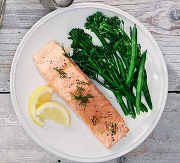

Index
fishStew
lasgna
salmon
salmon

Description
This is the best lasagna you can ever have!
Ingredients
4 skinless salmon fillets
1 tbsp olive oil or melted butter
chopped herbs, lemon slices and steamed long-stem broccoli, to serve (optional)
- Heat the oven to 180C/160C fan/gas 4. Brush each salmon fillet with the oil or butter and season well.
- Put the salmon fillets in an ovenproof dish. Cover if you prefer your salmon to be tender, or leave uncovered if you want the flesh to roast slightly.
- Roast for 10-15 mins (or about 4 mins per 1cm thickness) until just opaque and easily flaked with a fork. Serve with a sprinkling of chopped herbs, lemon slices and steamed long-stem broccoli, if you like.